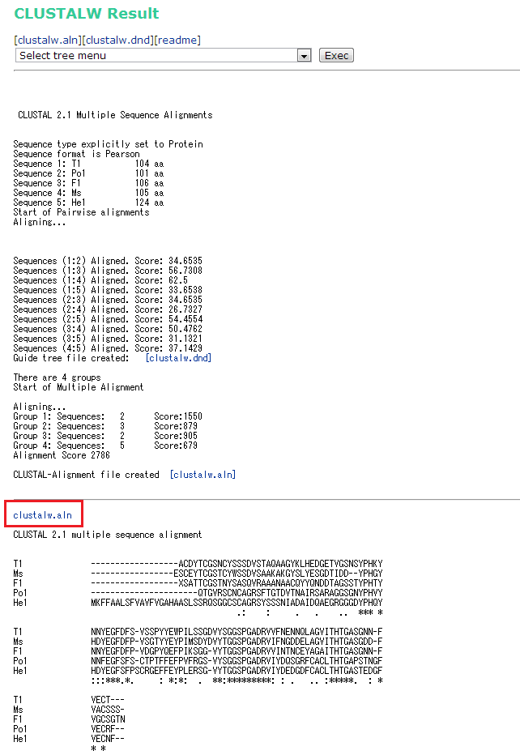
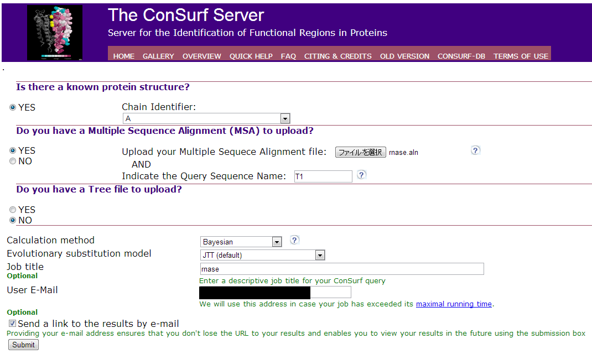
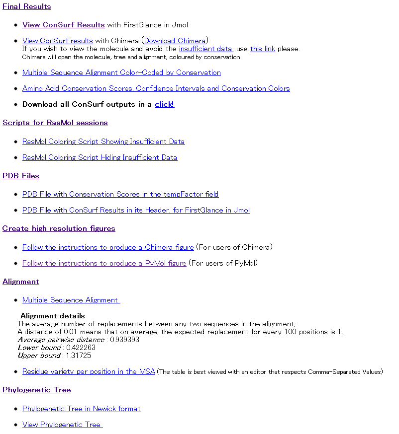
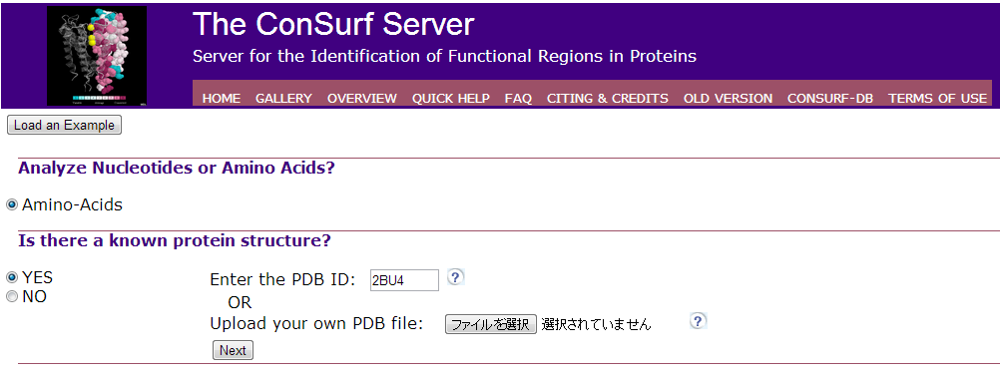
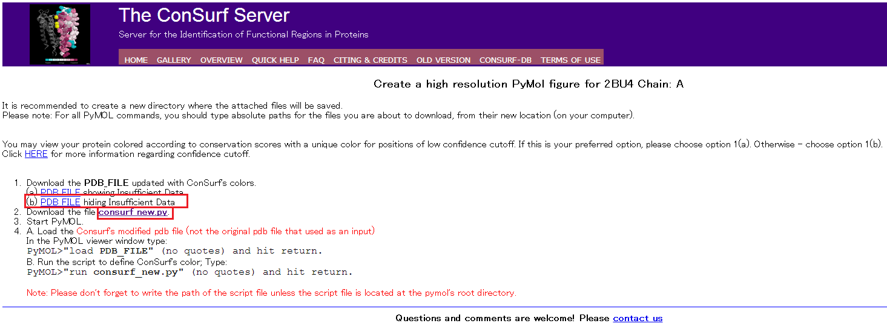
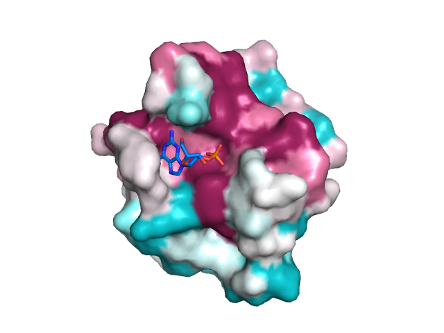

PyMOL tutorial | color by conservation
English version of Japanese website about structural biology
Home > PyMOL > Conservation
Multi sequence aligment file
- Upload FASTA file Access CLUSTALW, and upload or enter FASTA file.
- Click "Execute Multiple Aligment"
- Save "clustalw.aln"  Example of aligment file
 I uploaded five T1 type RNase T1/Po1/He1/Ms/F1, and color-code T1 (PDB ID:2B4U).
I uploaded five T1 type RNase T1/Po1/He1/Ms/F1, and color-code T1 (PDB ID:2B4U).Example of FASTA file
The ConSurf Server
AccessThe ConSurf Server- Analyze Nucleotides or Amino Acids? →Amino-Acids
- Is there a known protein structure? →YRS
- Do you have a Multiple Sequence Aligment(MSA) to upload? →Upload aligment file(***.aln)
- Do you have a tree file to upload? →No
- Enter Job title and your E-Mail adress, and click "submit" 
- When the calculation is finished, click "Follow the instructions to produce a PyMol figure (For users of PyMol)" 
- Save "PDB FILE" and "consurf new.py"
→Enter PDB ID or upload PDB file
Click "next" 
→Enter sequence name corresponding PDB file at "Indicate the Query Sequence Name" (PDB ID:2BU4 is corresonds to sequence name T1. So I type T1.)
-

Color-code on PyMOL
- Open PDB file
- Run → consurf_new.py
- Show → surface 
Flexible ←--------------------------------------→ Conserved